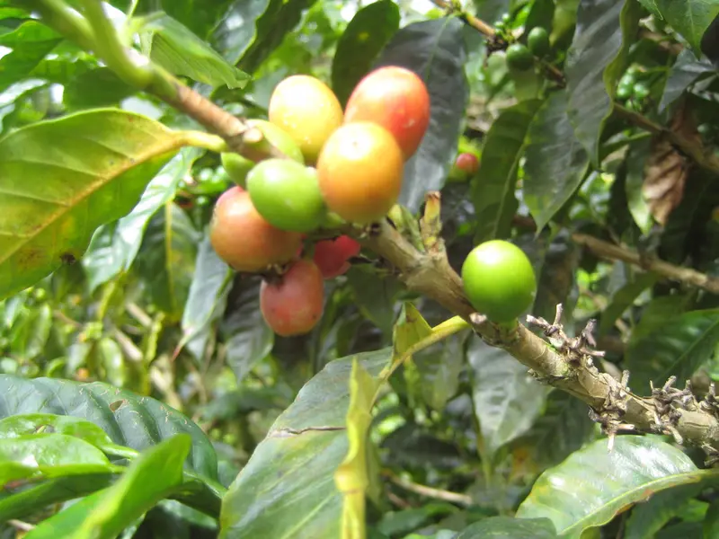
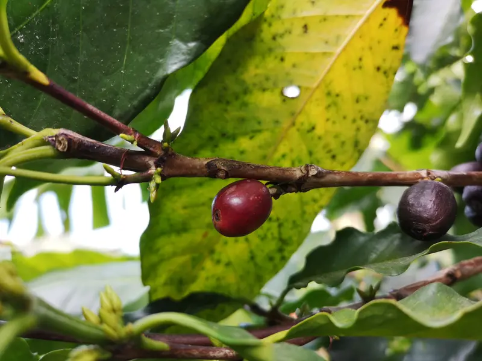
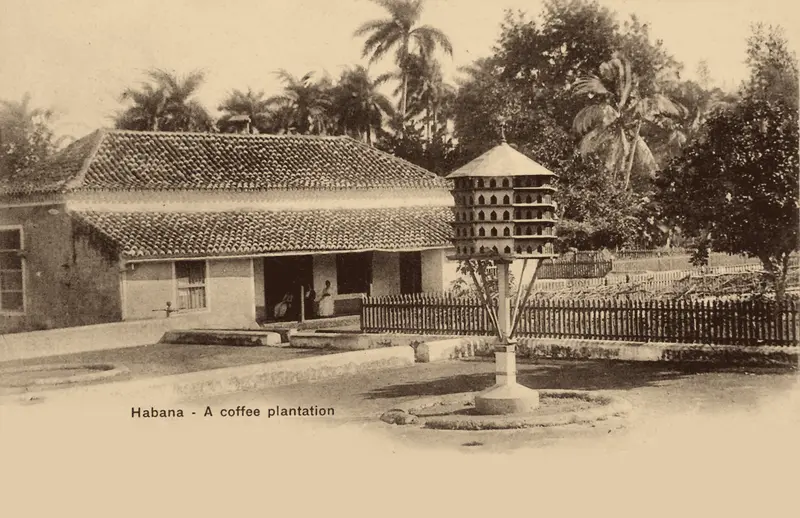
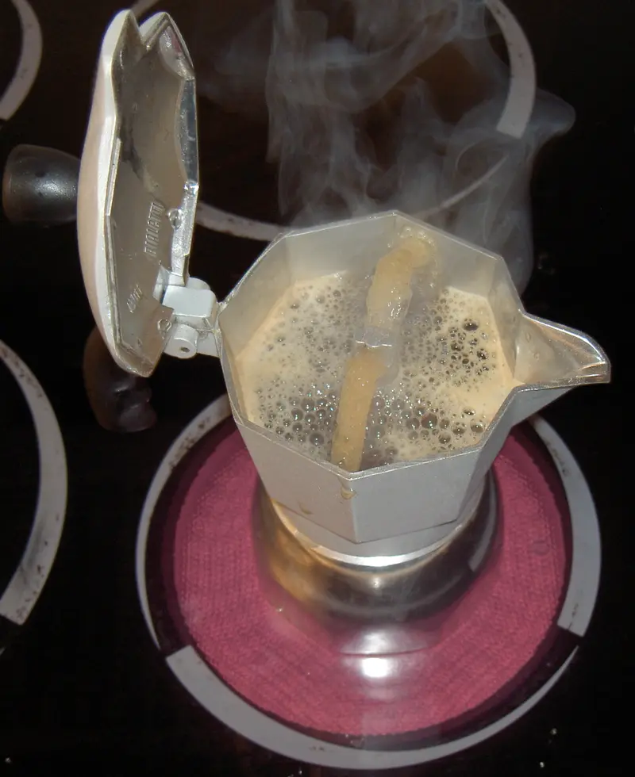
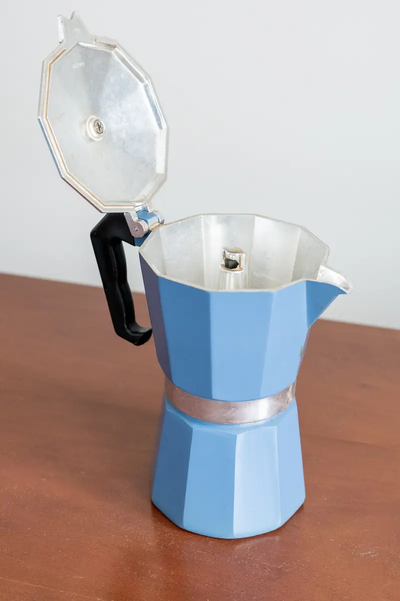
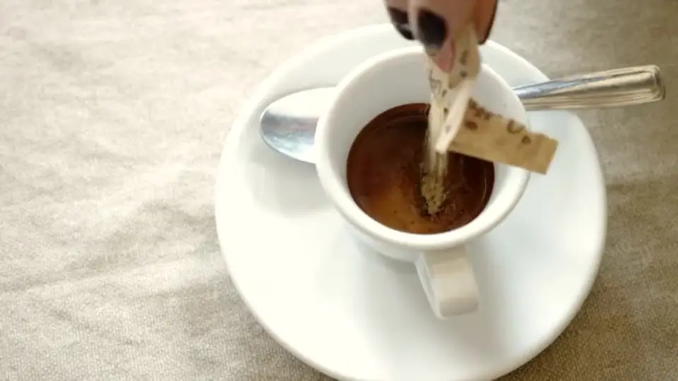
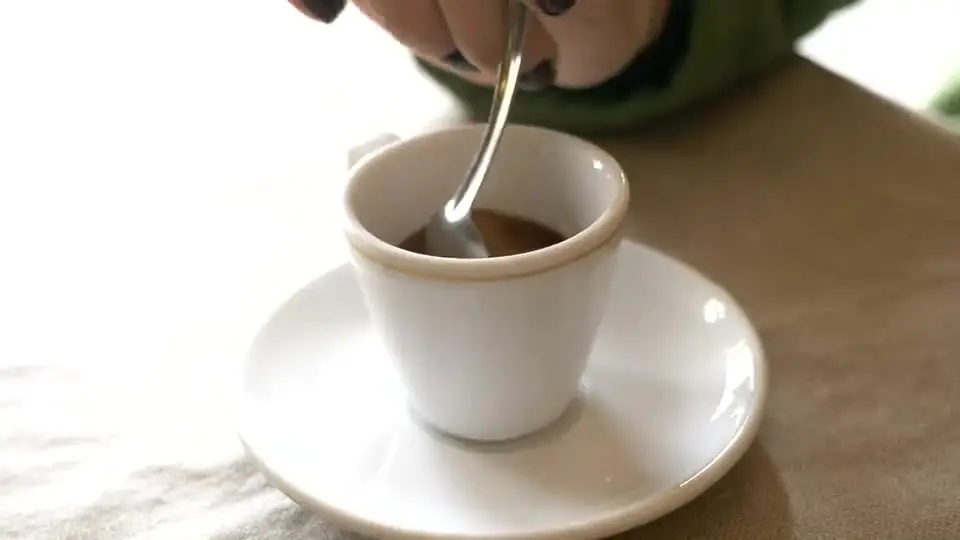
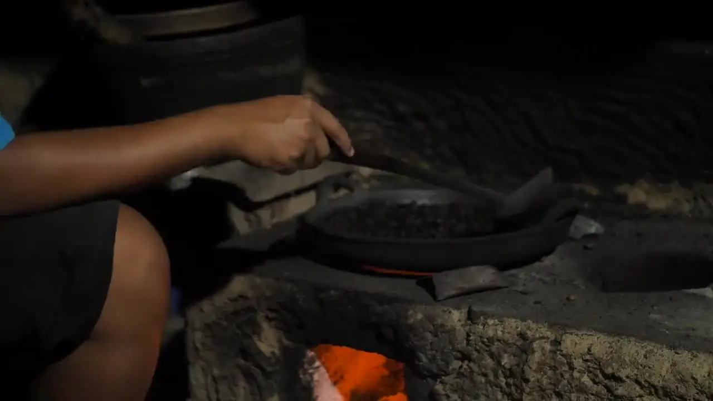
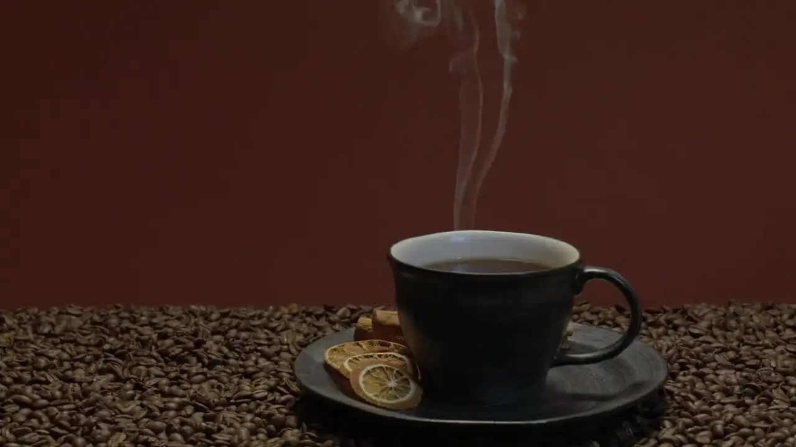
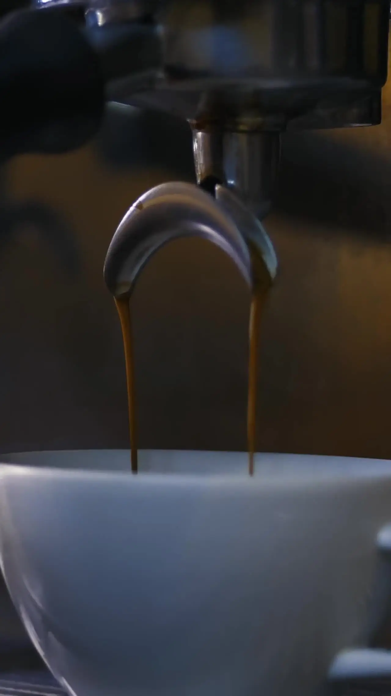

Créditos
Las fotos de los productos son de Café El Mío. Estas son las demás imágenes y videos del sitio, con sus autores y licencias. Algunas fotos se recortaron o se pasaron a duotono.
Fotos
 Café subiendo en la cafeteraFoto: Vee Satayamas. Licencia CC BY 4.0. Ver en Wikimedia Commons.
Café subiendo en la cafeteraFoto: Vee Satayamas. Licencia CC BY 4.0. Ver en Wikimedia Commons. Colada en tacitasFoto: Mangocity. Licencia CC BY-SA 4.0. Ver en Wikimedia Commons.
Colada en tacitasFoto: Mangocity. Licencia CC BY-SA 4.0. Ver en Wikimedia Commons. CortaditoFoto: Mangocity. Licencia CC BY-SA 4.0. Ver en Wikimedia Commons.
CortaditoFoto: Mangocity. Licencia CC BY-SA 4.0. Ver en Wikimedia Commons. Cafecito en el mostradorFoto: Visitor7. Licencia CC BY-SA 3.0. Ver en Wikimedia Commons.
Cafecito en el mostradorFoto: Visitor7. Licencia CC BY-SA 3.0. Ver en Wikimedia Commons. Tacita de café cubanoFoto: Asukite. Licencia CC BY-SA 4.0. Ver en Wikimedia Commons.
Tacita de café cubanoFoto: Asukite. Licencia CC BY-SA 4.0. Ver en Wikimedia Commons.
Cerezas de café en ColombiaFoto: U.S. Fish and Wildlife Service. Licencia Dominio público. Ver en Wikimedia Commons. Cerezas de café madurasFoto: Musimbi gerald. Licencia CC0. Ver en Wikimedia Commons.
Cerezas de café madurasFoto: Musimbi gerald. Licencia CC0. Ver en Wikimedia Commons.
Cereza de arábicaFoto: Roger Burger. Licencia CC0. Ver en Wikimedia Commons. Parque del Dominó, Pequeña HabanaFoto: Phillip Pessar. Licencia CC BY 2.0. Ver en Wikimedia Commons.
Parque del Dominó, Pequeña HabanaFoto: Phillip Pessar. Licencia CC BY 2.0. Ver en Wikimedia Commons. Mural de la Calle 8Foto: Sharon Hahn Darlin. Licencia CC BY 2.0. Ver en Wikimedia Commons.
Mural de la Calle 8Foto: Sharon Hahn Darlin. Licencia CC BY 2.0. Ver en Wikimedia Commons. Edificio en la Calle OchoFoto: Phillip Pessar. Licencia CC BY 2.0. Ver en Wikimedia Commons.
Edificio en la Calle OchoFoto: Phillip Pessar. Licencia CC BY 2.0. Ver en Wikimedia Commons. Vista de un cafetal (grabado, en duotono)Foto: Autor desconocido. Licencia Dominio público. Ver en Wikimedia Commons.
Vista de un cafetal (grabado, en duotono)Foto: Autor desconocido. Licencia Dominio público. Ver en Wikimedia Commons.
Cafetal en La Habana (postal antigua)Foto: J. Charavay. Licencia Dominio público. Ver en Wikimedia Commons. Café en pilón cerca de ViñalesFoto: Adam Jones. Licencia CC BY-SA 2.0. Ver en Wikimedia Commons.
Café en pilón cerca de ViñalesFoto: Adam Jones. Licencia CC BY-SA 2.0. Ver en Wikimedia Commons.
Cafetera italianaFoto: Berteun Damman. Licencia Dominio público. Ver en Wikimedia Commons. Café en la cafeteraFoto: Jamesjsimon at English Wikipedia. Licencia Dominio público. Ver en Wikimedia Commons.
Café en la cafeteraFoto: Jamesjsimon at English Wikipedia. Licencia Dominio público. Ver en Wikimedia Commons.
Cafetera azulFoto: ajay_suresh. Licencia CC0. Ver en Wikimedia Commons. Cafetal en Las TerrazasFoto: Arnoud Joris Maaswinkel. Licencia CC BY-SA 4.0. Ver en Wikimedia Commons.
Cafetal en Las TerrazasFoto: Arnoud Joris Maaswinkel. Licencia CC BY-SA 4.0. Ver en Wikimedia Commons. Cerezas de café en la manoImagen de la tienda de Café El Mío.
Cerezas de café en la manoImagen de la tienda de Café El Mío. Fotos de las recetas de goteo, prensa, espresso y café con lecheCuadros de videos de Mixkit (licencia gratuita de Mixkit).
Fotos de las recetas de goteo, prensa, espresso y café con lecheCuadros de videos de Mixkit (licencia gratuita de Mixkit).
Videos
 Granos tostados con vaporVideo de Mixkit, licencia gratuita de Mixkit. Ver original.
Granos tostados con vaporVideo de Mixkit, licencia gratuita de Mixkit. Ver original.
Azúcar en el espressoVideo de Mixkit, licencia gratuita de Mixkit. Ver original.
Revolviendo el caféVideo de Mixkit, licencia gratuita de Mixkit. Ver original.
Tostando café al fuegoVideo de Mixkit, licencia gratuita de Mixkit. Ver original.
Taza con vaporVideo de Mixkit, licencia gratuita de Mixkit. Ver original.
Espresso saliendo de la máquinaVideo de Mixkit, licencia gratuita de Mixkit. Ver original.